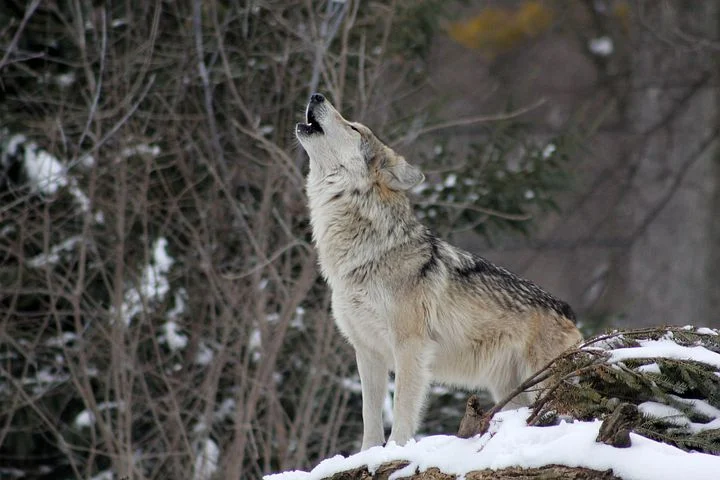

A glimps of nature...

Why should we care about wildlife
1. Help balance ecosystems
2. Feed humans and other carnivores
3. Assist with medical research
4. Contribute to science via fossils, etc.
5. Have great cultural significance